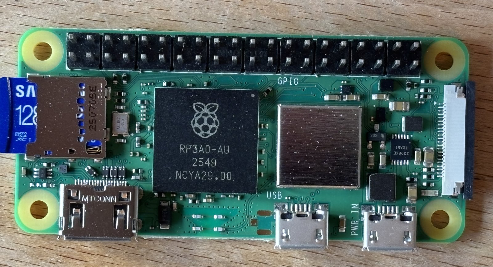

C1
Raspberry Pi Zero 2 W single-board computer
verify×1Already-owned board, confirmed to be the Zero 2 W variant (onboard 2.4 GHz WiFi + Bluetooth). Picked as the brain for the first robot-car prototype: it generates the PWM for the D2 DRV8833 driver and gives remote control over WiFi (SSH / small web UI) with no extra radio hardware — which sidesteps reviving the R1 CM02 module.
- RP3A0 system-in-package: quad-core Cortex-A53 @ 1 GHz, 512 MB RAM. Runs Raspberry Pi OS from microSD.
- Board 65 × 30 mm, ~5 mm thick bare; four M2.5 mounting holes on a 58 × 23 mm rectangle (standard Zero footprint, well documented — no caliper work needed for the CAD model).
- Connectors all on one long edge: mini-HDMI, micro-USB OTG (data), micro-USB
power. microSD slot on the short edge, CSI-2 camera connector on the other
short edge. Keep the SD and USB edges reachable in the chassis layout.
The two micro-USB jacks look identical and sit ~8 mm apart, so go by the
silkscreen:
USBis the inner one (OTG data),PWR INthe outer one nearest the CSI connector.PWR INis the jack to power the board from; the OTG jack also feeds the 5 V rail, which is what makes single-cable USB-gadget setup work. - 40-pin GPIO header along the other long edge, populated (see photo) — 2 × 20 on 2.54 mm pitch, ten 4-way plastic blocks in one row, so the driver ribbon plugs straight on and nothing needs soldering on this end. What the photo can't settle is whether it's a female socket strip or a male strip soldered pins-down: from directly above both read as black wells with a recessed contact in each. A side view decides it, and it decides which end the jumper wires need — male-ended into sockets, female-ended onto pins.
- 3.3 V logic — drives the
DRV8833 inputs directly whatever the driver's VCC is, since the DRV8833's
logic thresholds aren't referenced to its motor rail (VIH 2 V).
Software PWM (e.g.
pigpio, DMA-timed) is smooth enough for brushed gearmotors, which is just as well: the two hardware PWM channels are shared across pins (PWM0 = GPIO12/18, PWM1 = GPIO13/19), so four driver inputs can't each have their own. - Prototype GPIO map, four inputs to the D2 driver plus ground:
GPIO12/13/19/16 on header pins 32/33/35/36, ground on 34 — one 5-wire
ribbon at the end of the header. All four are in the GPIO9-and-up group
that idles pulled down at boot; GPIO0–8 idle pulled high,
which against the DRV8833's 150 kΩ input pulldowns would sit above
its 2 V VIH and twitch a motor before Linux is up. Full plan in
cad/robot_car/WIRING.md. - Power: 5 V. Budget ~1 A worst case with WiFi busy (idle is far less). Plan: P1 MP1584EN buck set to 5.1 V from the B2 2S pack, feeding the 5 V/GND GPIO pins directly (bypasses the micro-USB connector; the Pi has no input protection on those pins, so the buck output must be verified with a meter first).
To verify:
- Header type from a side view: female sockets, or male pins soldered downward (decides male- vs female-ended jumper wires)
- Header numbering, before any wire goes on: pin 1 is the end nearest the microSD slot, and continuity from a pin to a micro-USB shell picks out the ground pins. At the far end from the SD card the last pair is pin 39 (GND) and pin 40 (GPIO21) — the one that beeps is 39, which fixes which row carries the odd numbers
- What is on the fitted microSD (a 128 GB Samsung card is in the slot), and whether it boots current Raspberry Pi OS; WiFi joins the LAN
- Idle and WiFi-active current draw at 5 V (sets the real buck budget)
- Powering via GPIO 5 V pins from the P1 buck: set and measure 5.1 V under no load before first connection
pigpiosoftware PWM on four GPIOs, scoped or LED-checked, before wiring the DRV8833
{kind=link}

RP3A0-AU SoC
(so the 2 W, not the original Zero), the populated 40-pin header, the fitted
microSD card, and the USB / PWR IN silkscreen on the two
micro-USB jacks. Wiring plan in cad/robot_car/WIRING.md.